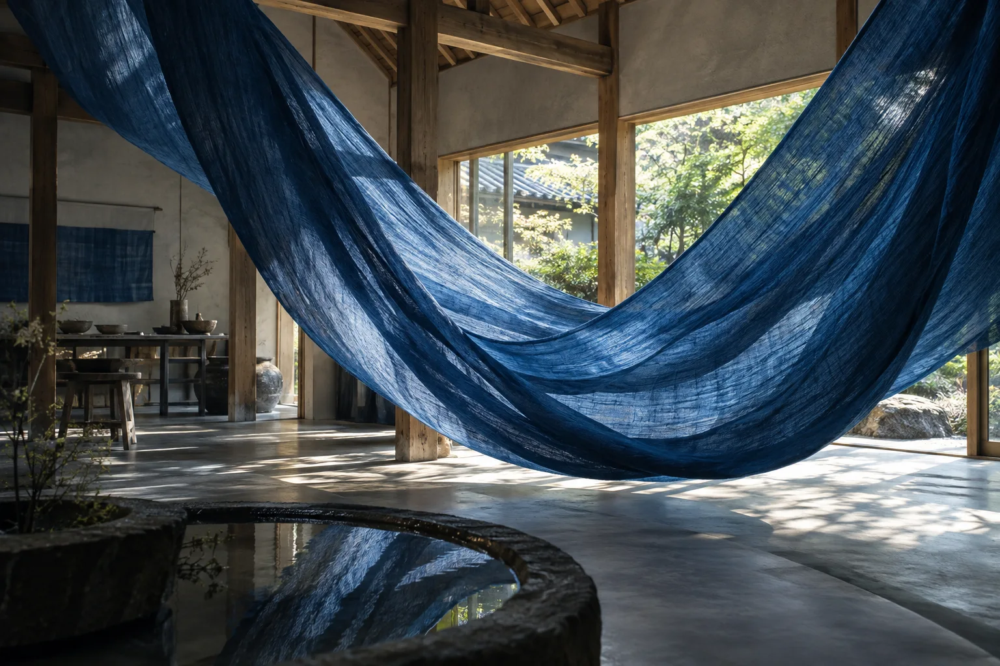
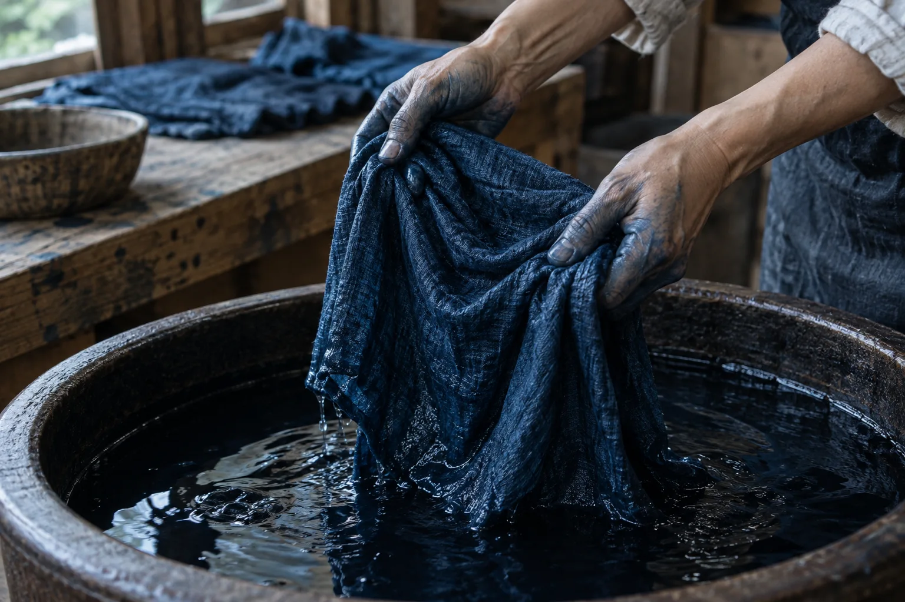
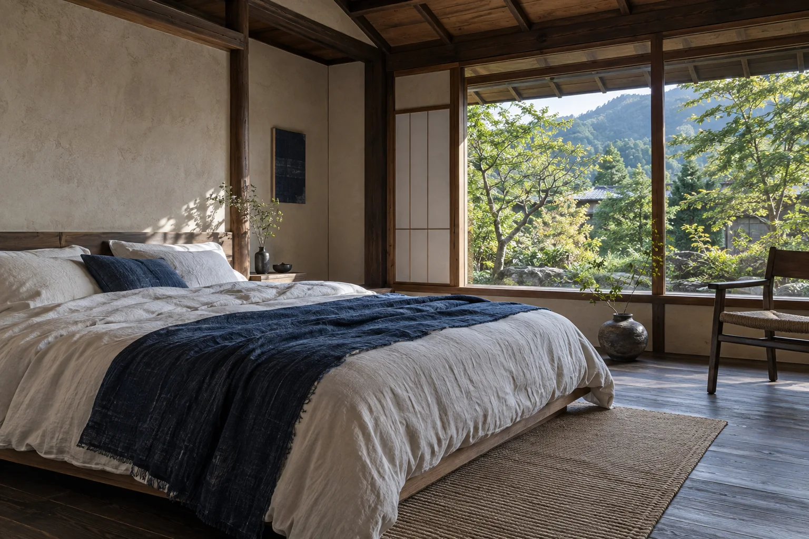

日々と、日々のあいまに。
青に、ほどける。
藍に触れ、余白に泊まる。
徳島で見つける、私のための一泊。
A slower
shade of life.
何もしない、ではなく。
ひとつのことを、ゆっくり。
水に触れる。布をひらく。
青が深まるのを、ただ待ってみる。
いつもなら通り過ぎてしまう時間に、
ふと、自分の感覚が戻ってくる。
AIMAは、藍染のアトリエと小さな宿。
手仕事のある一日と、予定のない翌朝を。
日常のあいまに、静かな一泊をつくりました。
今日のあなたは、
どんな青ですか。
淡い青も、深い青も。
心に近い色を、ひとつ選んでみてください。

Touch the blue.
持ち帰るのは、
色と、この時間。
染めて、ひらいて、空気に触れさせる。
少しずつ青になっていく布を眺めながら、
世界にひとつの一枚をつくります。
はじめてでも、大丈夫。
結び方から染め上がりまで、
アトリエのスタッフが一緒に手を動かします。
- 体験時間
- 約90分
- つくるもの
- リネンハンカチ 1枚
- 体験プラン
- ¥6,600 ／ 1名・税込
予定のない朝まで、
泊まっていこう。
Stay a little longer.

染めた手を休めたら、
庭を眺めたり、本をひらいたり。
静かな部屋で、時間を自分に返してあげる。
- ROOMS
- 一日二組
- YOUR SPACE
- 庭に向く、二人の部屋
- ONE NIGHT & ATELIER
- ¥28,600〜／ 1名・税込
時計より、
心のままに。
こんな一泊は、いかがでしょう。
-
お茶で、ひと息。
荷物を置いて、庭の見える席へ。
急いできた気持ちも、ここでほどいて。 -
青に、手を入れる。
好みの色を見つけて、布を染める。
乾くまでの時間には、庭をひと巡り。 -
夜を、ゆっくり使う。
お気に入りの本と、やわらかな灯り。
夕食は近くの店を訪ねるのも楽しみ。 -
いつもより、遠回り。
朝食のあとは、近くを歩いてみる。
染めた一枚と、少し軽くなった自分を連れて。
旅の前に。
藍染は、はじめてでもできますか？
はじめての方を想定した体験です。布の結び方や染め方を、スタッフが一つずつご案内するプランとして設計しています。
泊まらずに、体験だけでも？
はい。約90分の藍染体験だけを選べます。「旅をつくる」で「日帰りのアトリエ」を選んでみてください。
どんな服装で行けばよいですか？
袖をまくれる、動きやすい服装を想定しています。染液がつくことがあるので、汚れてもよい服がおすすめです。エプロンは貸し出す設定です。
このサイトから予約できますか？
AIMAは、架空のアトリエと宿を描いたコンセプトサイトです。旅のプランを作って保存できますが、実際の予約・決済はできません。施設・料金・写真はすべて制作上の設定です。
MAKE ROOM FOR YOURSELF.
次の余白を、
ここにつくろう。
ひとりでも、大切な人とでも。
あなたのペースで過ごす、一日を。